本文是Colfax Research针对RTX Pro 6000 Blackwell Server Edition（SM120）优化NVFP4块缩放GEMM的完整记录。在Blackwell SM12x GPU上做NVFP4块缩放GEMM，难点不仅在MMA指令本身，更在缩放因子（SFA/SFB）的布局、bank冲突、以及如何让Tensor Core始终忙碌。
作者从第1部分的基线内核出发，经线程块swizzling、epilogue改进、warp专用化存储、消除SFA bank冲突、12路MMA warp、自动调优共七轮迭代，并在附录补充了Cluster Launch Control与缩放因子加载实验。全文保留原文绝大部分技术细节与代码片段。
本文是SM12x GPU上NVFP4块缩放系列文章的延续。第1部分覆盖了相关PTX指令、缩放因子布局细节及CuTe DSL实现（如何将CUTLASS稠密GEMM转换为NVFP4块缩放GEMM）。本文针对RTX Pro 6000 Blackwell Server Edition（SM120）做具体优化。
本文沿用此前同一内核配置的版本：在前一篇文章的开头已指出，基线版本在中等问题规模上已相当高效，因此这里瞄准两个方向：针对小/大问题规模的已知问题做定向优化；以及累积起来能提升所有规模的微优化。优化阶梯结束时，在2k获得29%、4k获得6%、8k获得4%、16k获得16%、32k获得40% 的计算吞吐增益。
所有基准用Python 3.13.13、PyTorch 2.12.1与nvidia-cutlass相关版本产出；文中所有优化的代码均包含在Colfax Research的GitHub仓库中。RTX Pro 6000的规格：96 GB GDDR7显存、约1.6 TB/s带宽；24,064 CUDA核心；188个SM；12个GPC；752个第五代Tensor Core（每SM 4个）；L1 128 KB/SM；L2 128 MB；峰值FP4 Tensor TFLOP/s（FP32累加）2015.2；最大SM时钟2.43 GHz。
先从上一篇文章的内核结构快速回顾。内核采用warp特化设计、生产者-消费者流水线：每个CTA含1个TMA加载warp和8个MMA warp。加载warp为A、B、SFA、SFB操作数发起TMA拷贝到SMEM；主循环结束后，MMA warp执行尾声（epilogue），把输出写入SMEM，再由warp 0从SMEM发起TMA存储到全局内存。
内核用静态持久化分块调度器（static persistent tile scheduler），每个SM驻留单个CTA；每个work tile被调度到驻留它的CTA上。
图2包含版本1的计算吞吐（TFLOP/s）数据，取自3次预热迭代后20次迭代的平均运行时间。对8k方形GEMM，得到1476 TFLOP/s，约73% 利用率。五种问题形状平均，版本1达到cuBLAS 13.6的约93%，但在32k处明显崩塌。此外，较大的问题形状下SM时钟会降至2.15GHz。
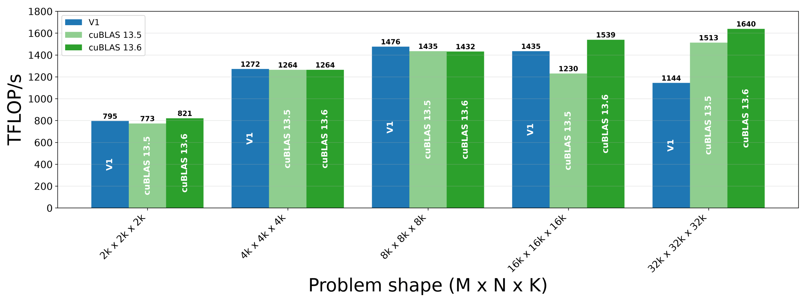
从性能图可见内核在大问题规模下性能下降。用Nsight Compute分析这种伸缩行为的来源：2k到8k时DRAM吞吐稳定在10%–14%，到16k和32k则跃升至64%–86%；同时L2命中率从8k到16k下降、32k时跌到76.31%。对计算密集型GEMM而言，这提示问题出在内存（带宽/缓存）扩展性上。
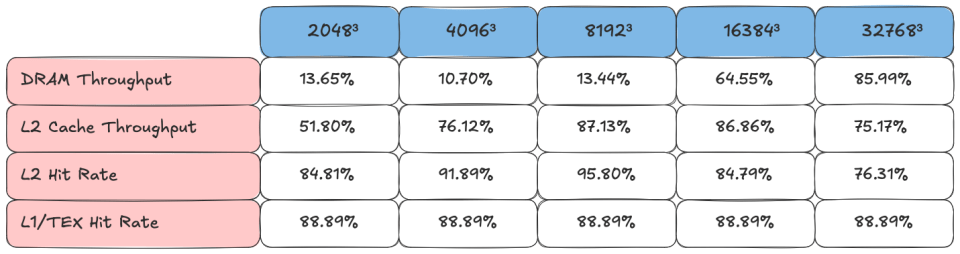
为何高于8k会发生陡变？考虑各问题形状的输入内存足迹：输入是形状为M×K与K×N的矩阵A、B。对8k而言，A、B各约0.5 GB，累计输入足迹约1 GB（若按FP16，数据约1GB分块装载到L2）。虽然NVIDIA GPU的精确L2驱逐策略未公开，但一般原则是同一数据越快被复用就越可能驻留在L2。因此要提高L2命中率，就该让工作调度更倾向数据复用。
回忆CTA的分配方式：CTA被分配C的工作tile，并加载同行的A tile、同列的B tile。换言之，同一行的C tile的CTA需要相同的A tiles，同一列的C tile的CTA需要相同的B tiles。考虑一个假想GPU：8个SM、启动8个CTA、C矩阵切成8×8网格。每个wave里发出16个操作数tile集的加载（一个操作数tile集即该wave需要的全部A/B tile）。
如果沿m维线性分配工作tile，就处于图4最左的情形：需要9个不同的操作数tile集：8个A、1个B。但如果把工作tile按swizzled网格分配（如棋盘式对角分布），同一wave的CTA会共享更多操作数。图4中间和右侧显示swizzle_size更大的情形，每个wave加载的A/B tile集总数从9降到5、再到3。
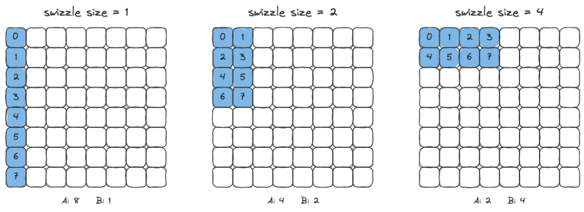
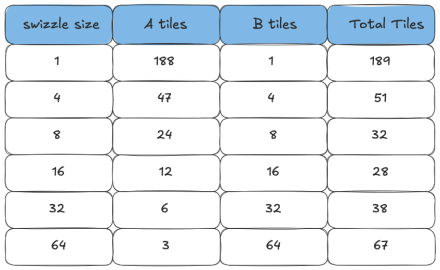
再看32k情形：CTA tile 128×128时，得到256×256的工作tile网格。由于有188个SM，调度时每个wave跨swizzle_size的整数上界（ceil(188/swizzle_size)）行 × swizzle_size列的工作tile。图5总结了多种swizzle_size选择下单个wave加载的不同A/B tile数。本版把swizzle_size设为16，因为它给出每wave不同分块总数最少（28）。
最大提升出现在32k，吞吐提升387 TFLOP/s。再看版本2的Nsight内存工作负载分析输出：16k和32k的L2命中率明显上升、对应的DRAM吞吐下降：即swizzle调度把工作tile的操作数分配给更可能在L2驻留的CTA。
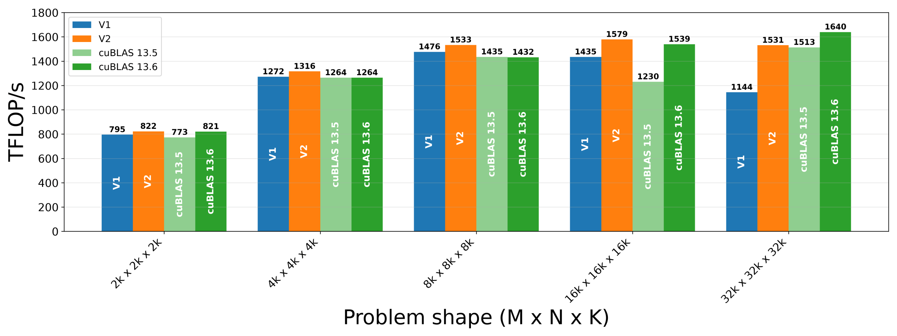
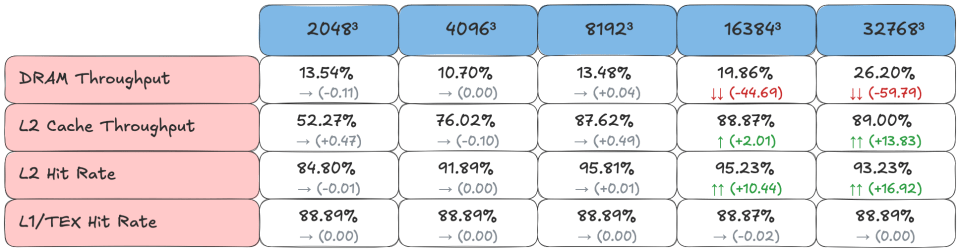
要确保内存依赖逻辑之类的东西不会不必要地阻塞内核内的操作。考虑epilogue：内核已经用了流水线化的异步存储，但有两处可改的同步逻辑。
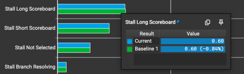
while work_tile.is_valid_tile:
. . .
tma_store_producer_group = pipeline.CooperativeGroup(
pipeline.Agent.Thread,
self.num_mma_warps * self.num_threads_per_warp,
)
tma_store_pipeline = pipeline.PipelineTmaStore.create(
num_stages=self.epi_stage,
producer_group=tma_store_producer_group,
)
这段tma_store_pipeline的设置原本放在work-tile循环之前（即每个work tile都重复设置同一pipeline）。版本3把它直接移到work-tile循环之前，消除了重复设置。
再看来自版本1与版本2的这段主体（版本3的完整epilogue循环）：
for epi_m in cutlass.range_constexpr(epi_rest_m):
for epi_n in cutlass.range_constexpr(epi_rest_n):
MmaMPerEpiM = epi_tile_m // mma_tile_m
MmaNPerEpiN = epi_tile_n // mma_tile_n
for mma_n_in_epi in cutlass.range_constexpr(MmaNPerEpiN):
for mma_m_in_epi in cutlass.range_constexpr(MmaMPerEpiM):
mma_n = (epi_n * MmaNPerEpiN) + mma_n_in_epi
mma_m = (epi_m * MmaMPerEpiM) + mma_m_in_epi
tRS_rD_slice = tRS_rD[(None, mma_m_in_epi, mma_n_in_epi)]
tRS_rAcc_slice = tRS_rAcc[(None, mma_m, mma_n)]
for elem_idx in cutlass.range_constexpr(cute.size(tRS_rD_slice)):
tRS_rD_slice[elem_idx] = tRS_rAcc_slice[elem_idx]
# Type conversion with alpha scaling
tRS_rD_out = cute.make_rmem_tensor(tRS_rD_layout.shape, self.c_dtype)
acc_vec = tRS_rD.load()
# Multiply alpha in FP32 before converting to c_dtype
# to avoid overflow when c_dtype is FP16
acc_vec = epilogue_op((alpha_value * acc_vec).to(self.c_dtype))
tRS_rD_out.store(acc_vec)
# Register to shared memory
epi_buffer = (epi_m * epi_rest_n + epi_n) % cute.size(tRS_sD, mode=[3])
if has_multi_epi_store:
self.epilog_sync_barrier.arrive_and_wait()
cute.copy(
tiled_copy_r2s,
tRS_rD_out,
tRS_sD[(None, None, None, epi_buffer)],
)
cute.arch.fence_proxy(
"async.shared",
space="cta",
)
self.epilog_sync_barrier.arrive_and_wait()
# Copy from shared memory to global memory
gmem_coord = (epi_m, epi_n)
if warp_idx == 0:
cute.copy(
tma_atom_c,
bSG_sD[(None, epi_buffer)],
bSG_gD[(None, gmem_coord)],
)
if has_multi_epi_store:
tma_store_pipeline.producer_commit()
tma_store_pipeline.producer_acquire()
# Advance to the next work tile
tile_sched.advance_to_next_work()
work_tile = tile_sched.get_current_work()
if has_multi_epi_store:
tma_store_pipeline.producer_tail()
producer_acquire() 调用发生得过早。在当前布局里，即使存在多个epilogue阶段，producer_acquire() 也会阻塞；此外producer_tail() 位于错误的循环深度：它应当在所有work tile都处理完之后正确收尾。
版本3的修复：把producer_tail移出warp循环，并把producer_acquire() 调用延后到紧挨着写入共享内存之前（即紧贴在self.epilog_sync_barrier.arrive_and_wait() 之前）。基准里用两个epilogue阶段、64×64的epilogue subtile。剖析显示从版本2到版本3长scoreboard stall略有下降。
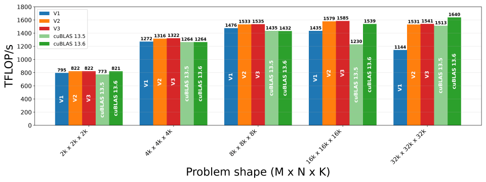
总体而言，效果很小，处于基准测试波动范围内（如图9所示）。
在计算密集型内核（如GEMM）里，我们希望Tensor Core始终忙碌，即总有一个带着MMA工作的warp随时可被调度。达成的一种方式是对加载路径做warp特化；但存储仍由计算（MMA）warp完成，会与MMA争用。版本4把存储也特化给存储warp。
实现层面，存储warp必须告知MMA warp：某个SMEM阶段何时可安全覆盖；MMA warp则要告诉存储warp：该阶段何时已含完整输出。二者通过CUDA named barrier协调。
self.epilog_free_barrier = pipeline.NamedBarrier(
barrier_id=2,
num_threads=(self.num_mma_warps + 1) * self.num_threads_per_warp,
)
self.epilog_ready_barrier = pipeline.NamedBarrier(
barrier_id=3,
num_threads=(self.num_mma_warps + 1) * self.num_threads_per_warp,
)
SM120有16个硬件管理的命名屏障，barrier_id指定用16个中的哪一个；num_threads指定要到达该屏障的总线程数（这里设为MMA warp数与存储warp数之和、乘以每warp线程数）。
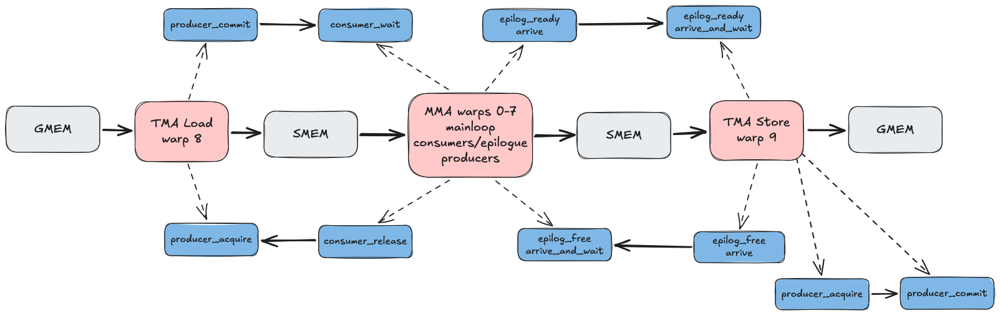
存储warp先对其内部TMA存储流水线调producer_acquire，然后到达epilog_free_barrier，向MMA warp发出该阶段空闲可写的信号；等待epilog_ready_barrier后，它发出store完成通知、提交并获取下一阶段。版本4的kernel结构总览见图10（本图见文末）。
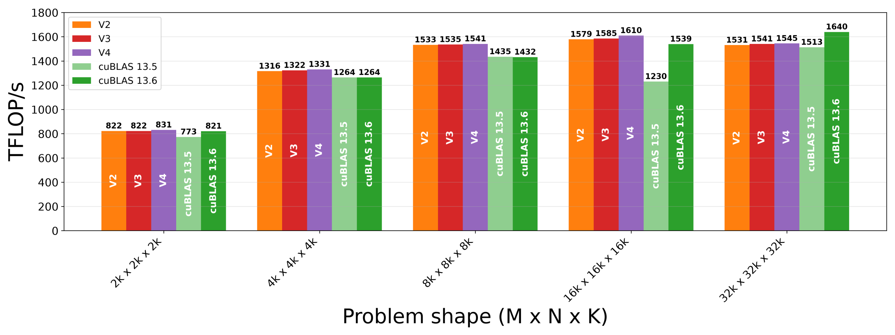
版本4的基准结果：2k与16k提升约1%，其余不变（图11见文末对应图）。
版本5处理bank冲突。虽然本版改动本身不显著影响性能，但消除这类共享内存访问的低效是良好实践，也为后续缩放因子相关改动扫清障碍。SMEM排成32个4字节宽的bank；若一个warp对分布在全部32个bank的不同地址发起访问，SMEM可在一个周期内服务该请求；若多个地址落在同一bank，访问就被串行化、需要额外周期。
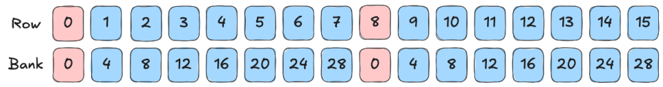
Nsight指标L1 Wavefronts Shared Excessive是这类冲突的信号。Nsight对该指标报告8.39M，且SMEM到寄存器的数据搬运（tiled_copy_r2s）耗时异常高。让我们量化这一冲突。回忆上一篇文章中SFA的SMEM布局：
SFA布局：((32,4), REST_M) 与 ((16,4), 1, REST_K) 组合成 (((16, 4), 512 * REST_K), ((0, 1), 4, 512))。其中M子布局 (32,4):(16,4) 把128×128 CTA tile的m坐标分解为m = m0 + 32·m1（m0 = m mod 32，m1 = ⌊m/32⌋ mod 4）；K子布局 (16,4):(0,1) 反映缩放因子组织，stride 0把一个缩放因子广播到NVFP4元素的16个元素。
由此推出的byte offset = 16·m0 + 4·m1 + b，对应bank index = ⌊(byte offset/4)⌋ (mod 32)。考虑SFA第0–15行的元素：此时m1 = 0，每个bank index都是4的倍数。观察可知row 0与row 8的缩放因子地址都落在bank 0；更一般地，row r与row r+8的缩放因子地址落在同一bank：16个地址分布在8个bank上，每个bank有两个地址访问，需要2个wavefront。
SFA原子的TV布局是 ((2, 2, 8), 64): ((8, 0, 1), 16)。回忆上篇：每个quad只有两个线程真正向MMA指令喂缩放因子数据，因此存在冗余。图13（见文末）显示了每个lane从SMEM的哪个bank请求SFA数据：warp访问总共8个bank、同一quad内4个lane访问同一bank……。
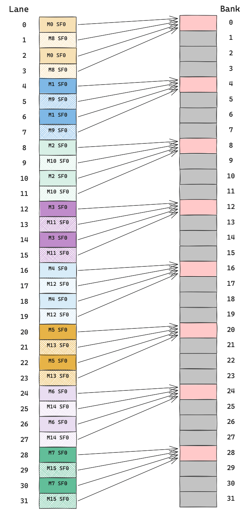
要得到Nsight报告的数：对8k问题形状，M=N=8192，把总指令数分解为64×64×64×8×4×1 = 8,388,608，与报告的8.39M完全吻合。
布局层面的修复很直接：修改stride：(32, 4):(4, 128)，等价于rank-1布局128:4。现在byte offset = 4·m0 + 128·m1 + b = 4(m0+32m1)+b = 4m+b，于是每个行有独立bank index。保持SFA的TV布局不变，新的SMEM到寄存器搬运访问模式使每次SFA片段加载在单个wavefront内完成。注意SFA原子的cosize不变：两个布局在相同定义域上都是双射，只是字节在原子内部重排。
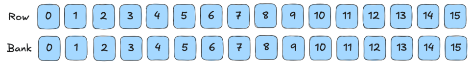
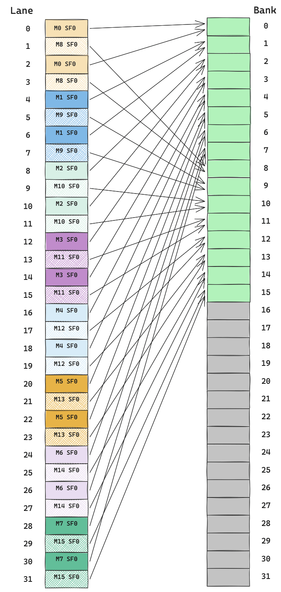
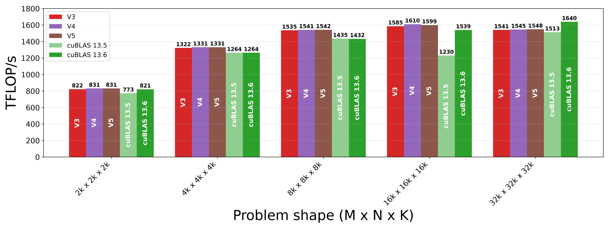
此阶段最大的绝对提升机会在2k问题形状。版本6的改动正是为2k而设。它把CTA tile从128×128改为192×128，并把MMA布局从 (4, 2, 1) 扩展到 (6, 2, 1)：即沿m维排布12个MMA warp（6×2），替代之前的8个（4×2）。
由于输出tile更大，工作tile数量比版本1-5减少：ceil(2048/192) = 11。图17（见文末）展示了版本1-5与版本6之间跨wave的工作tile分配差异。
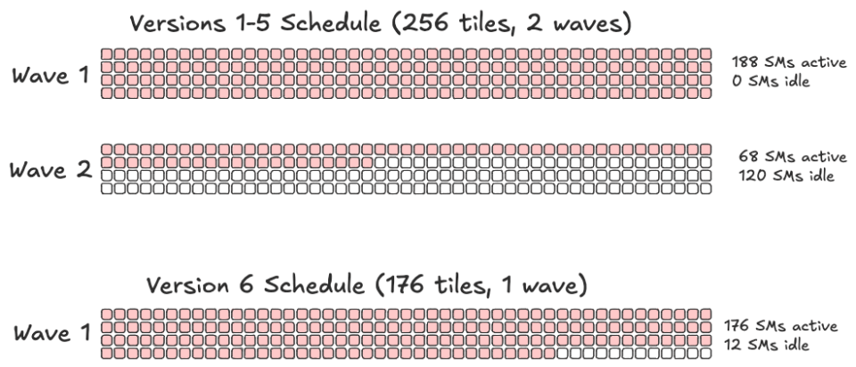
除了针对2k改进的工作块分配，更大的tile也提高了算术强度。CUTLASS的缩放因子布局辅助函数假设CTA tile的M尺幅是128的倍数：此处沿M有6个warp、即192行，需要调整：新布局为 ((32,3), REST_M) 与 ((16,4), 1, REST_K) 组合成 (((12, 4), 384 * REST_K), ((0, 1), 4, 384))。stride 12的来源：K=64子块有4个缩放因子、SFA原子覆盖3个32行块（4×3=12）。
与版本5只在固定大小原子内置换字节不同，版本6改变了原子本身的尺寸，因此也改了缩放因子的实际布局。由于更大的tile受SMEM约束，无法沿用版本1-5的四路load/MMA流水线阶段，此版改用两阶段。
版本6相对版本5在2k提升186 TFLOP/s，在16k与32k各提升40+ TFLOP/s。
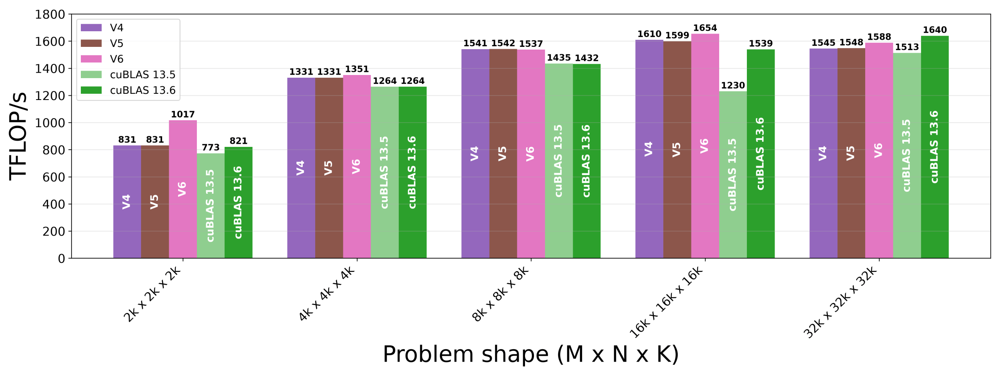
到目前为止，内核参数都是手工选择、并在版本1-6中保持一致。自动调优对内核参数做大范围扫描，在目标硬件上搜索最优配置：CTA tile尺寸（bM×bN×bK）、TMA加载/MMA计算阶段数、MMA warp数、swizzle size、epilogue tile（epi_m×epi_n）、epilogue流水线阶段数、TMA加载warp寄存器分配。
自动调优为给定问题形状识别出的最优配置见图19（见文末）。用这些配置，版本7在2k、4k、8k各提升数TFLOP/s，在16k与32k提升12到13 TFLOP/s。
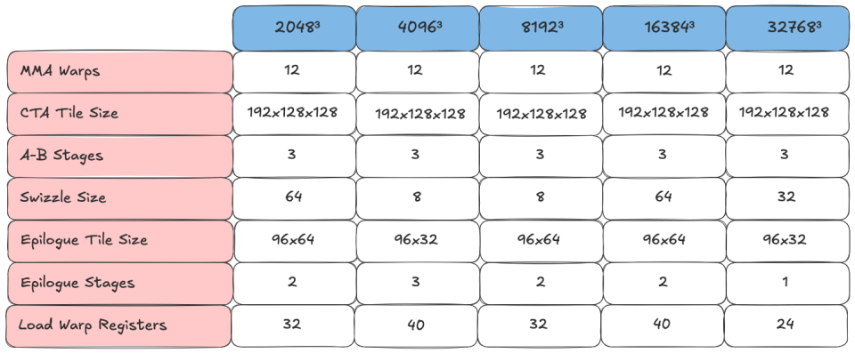
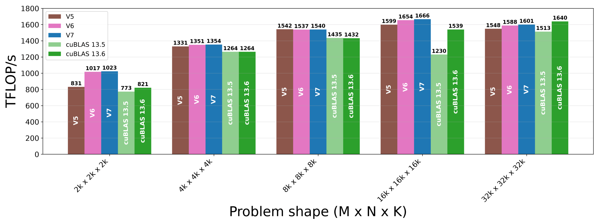
与版本1相比，版本7在2k提升29%、4k提升6%、8k提升4%、16k提升16%、32k提升40%；多轮优化使内核在各问题规模上都逼近cuBLAS。
下面给出本文讨论的全部版本在我们关注的问题形状（2k、4k、8k、16k、32k）上的性能进展快照。总体而言，版本7的最终表现已全面逼近甚至齐平cuBLAS：在多轮针对性优化加上最后的自动调优之后。
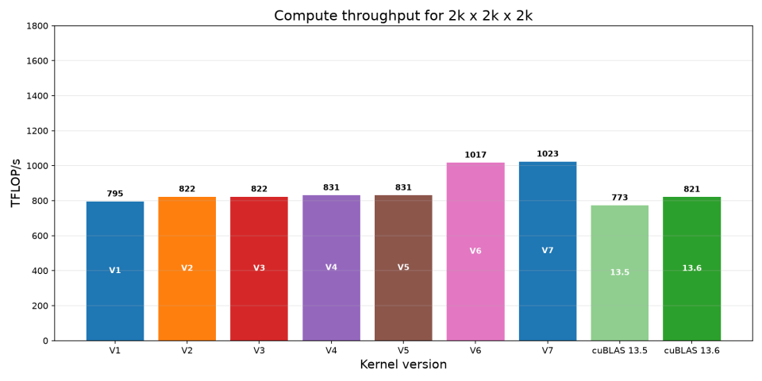
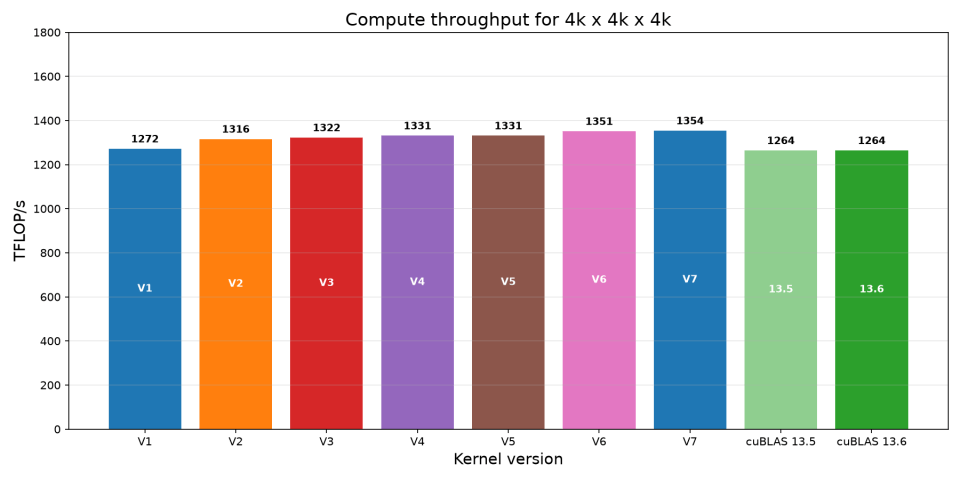
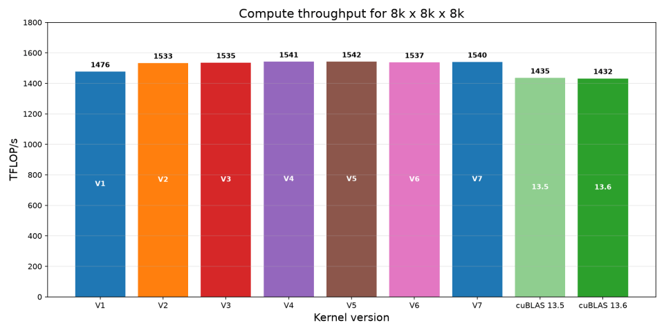
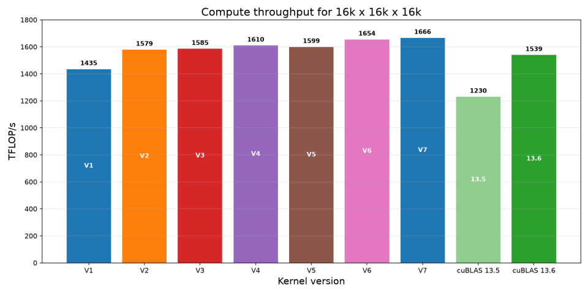
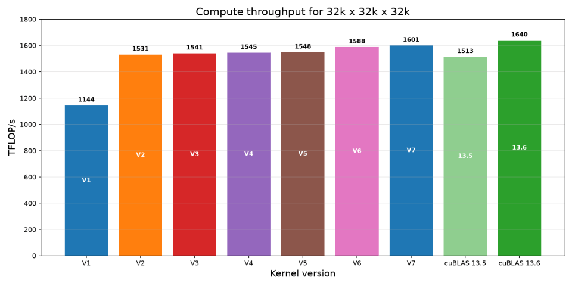
针对RTX Pro 6000 Blackwell Server Edition GPU优化教程NVFP4 blockscaled GEMM的改动包括：线程块swizzling使一个wave的操作数驻留在L2；改进epilogue同步；warp专用化存储；消除SFA bank冲突；更大tile与更多MMA warp；以及最终配置自动调优。
Cluster Launch Control（CLC）是NVIDIA Blackwell GPU的硬件支持特性，用动态持久调度高效调度tile：动态持久调度中，持久CTA在启动一个tile后，继续抓取并处理下一个可用的tile。
上一篇文章给出了SM100实现CLC的配方；版本8用该配方实现CLC，并为SM120做了数处修改。首先，clc_cluster_layout_vmnk构造如下：
cute.tiled_divide(cute.make_layout(((1, 1), 1)), (self.tiled_mma.thr_id.shape,))SM100用tcgen05 MMA指令，因此tiled_mma.thr_id.shape为1或2；SM120用warp级mma.sync，因此tiled_mma.thr_id.shape为32。第二，文章里的实现推迟CLC流水线初始化，再一起同步全部流水线屏障；本版改为先立刻初始化再一起同步。第三，CLC消费者屏障的到达计数需要调整，以适配这里比内核参考实现更多的MMA warp数。自动调优后，这个CLC内核的性能与版本7几乎相同。
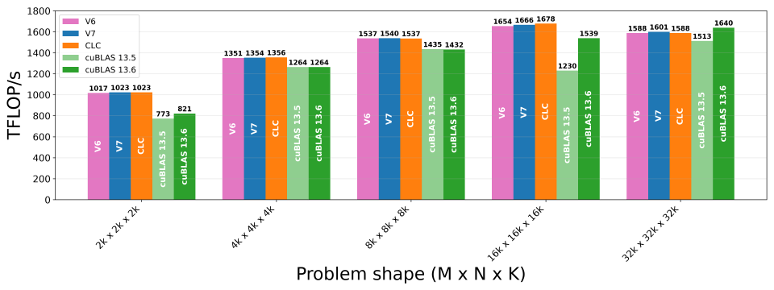
其余缩放因子实验：本节记录了通过改变缩放因子数据如何被载入寄存器来提升性能的一些尝试。SM120上NVFP4 GEMM最终落到的硬件MMA操作只从warp的部分线程消费缩放因子，取决于thread-id；CuTe DSL不直接暴露thread-id-a与thread-id-b、默认都传0。第一个方向是限制真正把SFA片段载入寄存器的线程数（消除冗余）；第二个方向是在单次加载中载入更多不同的SFA片段。
参考：https://research.colfax-intl.com/optimizing-an-nvfp4-blockscaled-gemm-on-rtx-pro-6000-blackwell-gpu-sm120/